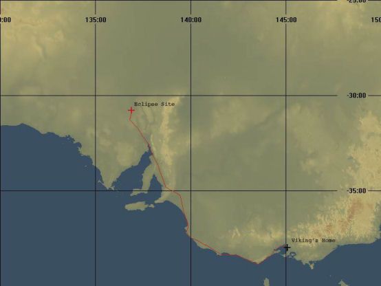

Prelude

This trip report is more of a photo album, rather than a huge amount of text. I think that the pictures speak far more about how big our country is than any amount of words I could write. As for the actual eclipse (a total solar eclipse) itself, I don’t think I have any chance of describing what an amazing experience it was.
I had heard about the eclipse earlier in 2002, when a friend of mine suggested that we ride across from Melbourne and watch it. We didn’t do much about it for some time, letting the usual stuff of life get in the way. But I never forgot the idea.
In about October, I started harassing my friends about getting ourselves organised for the trip. We were still wanting to go, but for Sharkey, there were some issues that would eventually stop him going. Solitaire was still interested, but two weeks before our organised departure date, his bike was hit by a car and damaged so that he couldn’t go.
So that left me. Shades of Agatha Christie’s “And then there was one”…
Sharkey lent me his GPS unit and large-scale map of the area, with the path of the eclipse drawn on, so there was no worry about getting lost out there.
Day 1 – Melbourne to Mount Gambier
Saturday, November 30th dawned cold and wet. Linda and Stuart left for their holiday at about 8am, and I bummed around the house, doing all the little things that needed doing before I left. Of course, I forgot important things like packing a hat, (and I forgot to pack the can of chain-lube) and putting the throttle lock back onto the bike.
The Melbourne to Geelong Freeway was three lanes of pure boredom, with the occasional rain shower thrown in for fun. After a coffee at Geelong to keep the coffee addiction under control (and to help thaw out as well), I headed off towards Torquay and the start of the Great Ocean Road.
What can I say? Even with the terrible head-wind that seemed to have a mind of it’s own, and a bike that handled rather badly, I had a ball of a time hooting along the GOR. Coming into Anglesea, I saw a very well kept red RC17 heading the other way. Whether it was a list member or not, I have no idea. It was about this time that I noticed the oil leak from the front left corner of the rocker cover. It wasn’t much, but over the duration of the trip, it would get worse.
The Cape Otway lighthouse was an interesting side-track. The road got narrower and narrower, and the corners got tighter and tighter, until I decided that I really should back off and take it easy. Which is just as well, as I had a pretty big slide coming through a hair-pin, and discovered that a 4WD was stopped on the road right in front of me. He’d stopped to look at the koala bear sitting in the middle of the road. As I idled towards him, the koala wandered off and started climbing a tree. (This is where I got the two photos of the koala.) There were supposedly tours of the lighthouse, but everything was locked up when I got there, so I turned around and carried on towards South Australia.
I stopped for lunch at Warnambool, then checked the map again, and headed off for Mount Gambier, via Portland for a fuel stop. There is a 30 minute time-difference between South Australia and the Eastern States, which is just enough to confuse you. I got to Mount Gambier about 6pm (or so) local time, found a pub for the night, had a beer and a meal, then collapsed into bed.
Day 2 – Mount Gambier to Adelaide
A quick detour to see the famous ‘Blue Lake’, and I headed towards Adelaide via the coast road. The scenery was pretty good, and I got a few good photos at Beachport before having to stop at Robe to try and rig some sort of rag over the cylinder head to stop the oil leak from blowing oil all over me. It sort of worked, but I’d end up improving it before the end of the day.
Once I left the coastal regions, it quickly became obvious just how bad the drought is – as far as the eye could see, it was dry, parched fields. And it’s not even summer yet – it’s going to be a bad year for bushfires. I stopped and took a couple of pictures, and then the batteries in the camera died.
As I was stopped on the freeway into Adelaide (completely ignoring the ‘Do not stop on the freeway’ signs), trying to get the ‘nappy’ (as I called it) on the bike to work a bit better, a rider by the name of Fred stopped to offer assistance. Very kindly, he and his daughter Alison offered to ride with me to Adelaide, just in case my bike decided to fall apart. So it was very interesting riding at 80km/hr (as fast as Alison was allowed to go, as she was still on her Learner’s Permit) along the freeway.
Once I managed to navigate my way to Bruce’s place, a very welcome beer was thrust into my hand, and the conversation started. Bruce’s hospitality can’t be faulted, nor can his friend Steve’s bike collection. “The Beast” is one impressive motorcycle! After more beers, and even more talk, I think I got to bed around midnight.
Day 3 – Adelaide to Port Augusta
Bruce left for work at about 06:30 the next morning, and after some breakfast, I headed off at about 08:30 for Port Augusta. It was warming up again, so I stopped quite a few times to have a rest and a cold drink. It was only a short day, and I arrived in Port Augusta sometime in the middle of the afternoon.
I stopped at the first pub I found, and organised a bed for the night, then set about contacting the people I was supposed to meet. In the end, I ended up reserving beds for BT, Nev, and BigIain for the following night. It’s just as well I did, as the pub was completely full on both Monday and Tuesday nights.
Day 4 – Port Augusta
A rest day. I spent most of the day sitting on the upstairs balcony of the pub reading a book. I really should have been getting out and about, doing the tourist thing, but I couldn’t be bothered.
BT arrived at about 1:30pm, with Nev and BigIain arriving at about 4:30pm or so. Once again, it was plenty of beer and more talk. BigIain was going to the Music festival at Lyndhurst, but BT and Nev were going to watch the eclipse.
Thankfully, sanity prevailed, and we eclipse watchers decided that going to Ceduna would be silly, as everyone was going there – why not go to Woomera, and get out into the desert where there’d (theoretically) be fewer people?
Day 5 – Port Augusta to Woomera to Port Augusta
As it had the other days, Wednesday dawned warm and clear, with a gentle breeze. BigIain headed off to Lyndhurst, whilst the three of us headed for Woomera. And what a ride is was…
After a while, BT stopped on the side of the road – his bike was acting up. It didn’t appear fatal, so we carried on after putting some more water into his radiator and coolent reservoir. A bit further on, he stopped again – again, it didn’t appear fatal, so we carried on to a rest stop and had a drink and a bit of a relax.
About 1km out of the rest stop, BT’s bike changed from a V-twin 500cc to a 250cc single, so it was back to the rest stop for some serious mechanical analysis. Removing the rocker cover from the front cylinder revealed the source of the strange behaviour. There is a ‘T’ shaped piece of pressed steel that is supposed to channel oil spray down onto the cam shaft. This guide had sheared off, and had been rattling around under the rocker cover – not good at all!
Of course, now that we’d fixed the serious problem, BT’s bike poured oil out from the rocker cover and all over the bike. In getting to Woomera (about 50km away), we put about a litre of oil into the bike (which had a total oil capacity of about 2.5litres).
One thing I did notice was the huge amount of road-kill out there – everything from tiny rabbits or wallabies to full-grown kangaroos. In one instance, I saw the remains of a cow near the side of the road. As for live animals, I saw only one emu walking in the shade of some small trees.
When we got to Woomera, BT found a garage where he could work on the bike – the garage owner was also a rider, and he was most helpful. Whilst BT fixed his bike, Nev and I went off to see what there was to see in Woomera. And there wasn’t that much to see, really. But we found the 10-pin bowling alley. To kill some time, we looked at the display of aircraft, rockets and missiles from when Woomera was actively used as a rocket firing range.
After BT fixed his bike, we went and had some fun hurtling balls at pins. Seeing how there was no accomodation available at Woomera, I rang the pub back at Port Augusta and booked beds for us for the night. Given that we wouldn’t be back before the pub closed, the room key was going to be left at the Police station for us.
And then it was time to head off to watch the eclipse. It was pretty easy to see when we’d arrived – there were people parked all over the place. We chose a fairly open area, and stood around waiting for everything to happen.
I got quite a few good photos out of it, and you can see them in the photo gallery at the bottom of the page. The partial eclipse photos all have a very heavy green tinge to them as I was using a piece of glass from BT’s arc welding visor as a filter. I am very happy with the photos of the totality that I took, particulary ‘113_totality_4’ – that one photo made it all worthwhile.
The actual eclipse itself is hard to describe – not a lot happened for a very long time, then in a matter of seconds, it went dark. It was as if someone had a dimmer control for the sun, and turned the brightness right down quickly. There was a pause of about 20 seconds or so, and then the sun came back again, as if that unseen hand had reversed the dimmer control.
After the eclipse, it was a quick ride back to “Spud’s Roadhouse” at Pimba for fuel and food, before a late-night blast back to Port Augusta.
On the way back to Pimba, the sunset was fantastic – the sun was still partly covered by the moon, and the sky was fantastic shades of yellow, orange and red. I really wish I had stopped to take some pictures of it.
All the outback safety people say you shouldn’t travel at night because of all the wildlife, but we made it back to Port Augusta without incident, arriving at the Police station at 5 minutes past midnight.
Day 6 – Port Augusta to Adelaide
We all went our separate ways on Thursday: BT back towards Canberra, Nev to buy a new mobile phone, and me towards Adelaide.
The ride back to Adelaide was a shocker – a vicious cross-wind that was gusting to at least 70km/hr, and heavy rain patches. By the time I got back to Adelaide, I was worn out. I had some time to kill before getting to Bruce’s house again, so I called into the ‘Classic Jet Fighter Museum’ at the Parafield Airport. I spent a very good couple of hours being shown around the place by one of the volunteer workers.
Day 7 – Adelaide to Melbourne
It was a cold night that night, but I was very warm in my sleeping bag, out in Bruce’s caravan. It didn’t warm up very much the next morning – looking at the weather reports (and my almost empty wallet), I decided to ride all the way to Melbourne that day.
And what a ride it was – I only stopped for petrol, and I arrived home at about 6:30pm, completely exhausted from the horrible cross-wind, and the very cold weather. This cold weather is very unseasonable – it’s usually quite warm and temperate this time of year.
After a hot bath (to ease the aching muscles in my neck and shoulders and also to thaw out a bit), a beer, and a small bite to eat, it was off to bed for a long sleep.
Conclusion
People have asked me if it was worth the effort, just to see 15 or 20 seconds of darkness. I have to answer yes – even though I spent the entire totality of the eclipse peering through a camera, taking photos as quickly as I could, it was worth it. Seeing an eclipse is one of those events you have to experience. I can now understand how people get ‘addicted’ to watching them.
According to the trip meter on the bike (which is not that reliable), I travelled 2940km. According to the GPS, I travelled 1556km from Melbourne to Woomera; given that I came back to Melbourne by a slightly shorter route, the trip meter doesn’t seem to be that far out.
Over all, the bike used over 200 litres of petrol (ouch!), but seeing how I was trying to ride at an average speed of about 110km/hr, with headwinds of about 40km/hr, it’s not surprising I used so much fuel.
In terms of oil consumption, if the leak hadn’t been there, I don’t think I’d have used any oil at all. With the leak, I put about 0.5litres in all together.
The Picture Galleries
The picture galleries are a little bit different to my other picture collections. These ones I created with a tool called ‘album’, and there are three levels of detail – contact sheets of thumbnails, a medium-sized picture, and the original picture.
I recommend looking at the pictures using the thumbnails and medium-sized images, as the originals are either 1280×960 or 2048×1536 pixels in resolution. If you want to download one of the big pictures, it may take a while, as they vary in size from under 300KBytes to over 1MByte in size.
In case you’re wondering, there are no pictures from the Adelaide to Melbourne leg of my trip, as I was in too much of a hurry to get home.